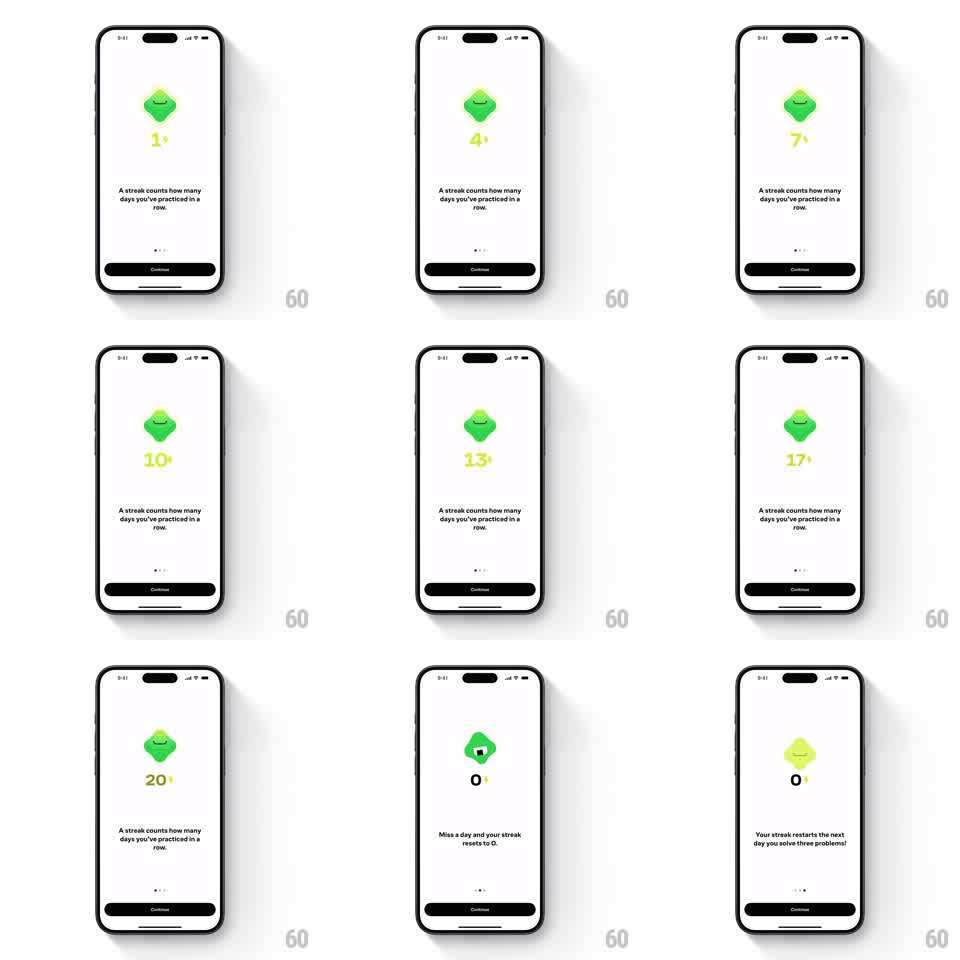

Media
Frame-by-frame

Rebuild this animation 1:1: Brilliant's streak explainer - the mascot pulses above a counter that climbs day by day, then morphs to a cracked state as the copy flips to the reset warning.

Rebuild this animation 1:1: Brilliant's streak explainer - the mascot pulses above a counter that climbs day by day, then morphs to a cracked state as the copy flips to the reset warning.
## Integration
Integration: stack-agnostic spec - springs given as stiffness/damping, timed motions as duration + curve; map every value to your framework and animation library of choice.
## Scene
Onboarding card: the green rounded mascot centered, a yellow streak number with a small lightning bolt below it, explainer copy ("A streak counts how many days you've practiced in a row." then "Miss a day and your streak resets to 0."), page dots, and a dark Continue button.
## Motion spec
Pattern: pulsing auto-play counter with morph, ~4s.
- The mascot pulses gently (scale 1 to 1.06 and back, 900ms loop) as the streak number increments one day at a time (1, 4, 7, 10, 13, 17, 20 - each step a quick pop: scale 1.3 to 1 in 200ms, 350ms apart).
- On each increment the mascot's glow swells with the number's pop.
- At 20 the mascot flashes and morphs to a cracked, desaturated state (300ms crossfade with a small shake, +-2deg) as the number resets to 0 with a downward drop (200ms, ease-in).
- The copy crossfades to the reset warning (250ms) as the morph completes.
- Page dots and Continue are static throughout.
## Calibration
- Number steps pop individually - this is counting, not a smooth roll.
- The morph is the lesson's turn: it must read as loss (desaturate + crack), not just a state swap.
## Reduced motion
Counter steps without pops; morph becomes a plain crossfade.
## Don't miss
- The yellow number carries a tiny lightning bolt superscript.
- The mascot's happy expression disappears with the morph - face changes with the body.